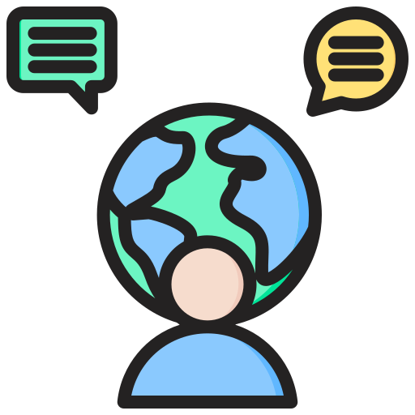

Absolvování kurzu českého jazyka. Začněte se učit programovací jazyky pro tvorbu webových stránek
2023-2024
VŠPJ
Specializace: Vývoj webových stránek a webových aplikací.
Znalosti:
HTML
CSS
JS
 Jazyky:
Ukrajinština (С2)
Angličtina (В1)
Čeština (В1)
Danylo Korol
Front-End Developer ( Junior )
Student s velkým potenciálem v oblasti vývoje Front-End. Zaměřuji se na inovativní a vizuálně atraktivní webové stránky. V současné době se aktivně věnuji vlastní praxi a neustále rozvíjím své dovednosti. Je mi 18 let. Připraven pracovat a učit se novým věcem.
O mně:
Jsem student s velkým zájmem a potenciálem v oblasti FrontEnd vývoje, aktivně se podílím na vytváření inovativních a vizuálně atraktivních webových stránek. Mám zkušenosti s vývojem vlastních projektů, kde se neustále zdokonaluji.
Kromě toho jsem studoval na Masarykově univerzitě (Česká republika), kde jsem se naučil česky. V současné době pokračuji ve studiu na VŠPJ v Jihlavě (Česká republika).
Mé vzdělání a praktické zkušenosti v oblasti FrontEnd vývoje mi umožňují řešit kreativní problémy a pracovat na projektech s využitím technologií, jako jsou HTML, CSS a JavaScript. Díky tomu dokážu zajistit webové stránky nejen po stránce funkční, ale i estetické.
Moje ochota pracovat a učit se novým věcem v kombinaci se schopností učit se česky svědčí o mé otevřenosti, přizpůsobivosti a připravenosti na nové výzvy.
Navíc také:
Schopnost efektivně pracovat v týmu a vyjadřovat své názory.
Vysoká úroveň sebemotivace a touha neustále zlepšovat své dovednosti.
Otevřenost a vynikající schopnost učit se.
Připravenost na výzvy a touha dosahovat vysokých výsledků.
Portfolio:
Dvojklikem se přesměrujete na webovou stránku.
1. Plně funkční webové stránky s filmy. Byl napsán pomocí:HTML, CSS, PHP,MYSQL. (Napsáno v rámci kurzu na univerzitě).
2. Funkční web s "DropMenu" (Responzivní webové stránky). Nabídka je zobrazena tak, jak vypadá v telefonu. Bylo napsáno pomocí:HTML, CSS (Napsáno pro praxi)
3. Minimalistická stránka s animací při najetí kurzorem na některé z tlačítek.Byla napsána s pomocí: HTML, CSS (Napsáno pro praxi)

 Telefon: 773479771
Telefon: 773479771
 Email: dankorol2005@gmail.com
Email: dankorol2005@gmail.com
 Brno
Brno
 Vzdělání:
Vzdělání: Znalosti:
Znalosti:.png) HTML
HTML
.png) CSS
CSS
 JS
JS
 Ukrajinština (С2)
Ukrajinština (С2)
 Angličtina (В1)
Angličtina (В1)
 Čeština (В1)
Čeština (В1)
 Sport (běh, stolní tenis, fotbal)
Sport (běh, stolní tenis, fotbal) Čtení knih (sci-fi, beletrie)
Čtení knih (sci-fi, beletrie)